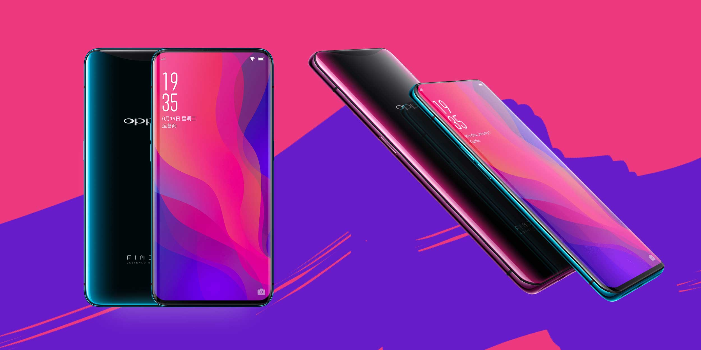

OPPO засновано в Китаї. Компанія почала з виробництва MP3-плеєрів та DVD/Blu-ray пристроїв.
OPPO розширила лінійку споживчої електроніки, зосередившись на якості звуку та дизайні.
Компанія почала експортувати аудіотехніку до країн Азії та Європи.
OPPO досліджувала ринок мобільних пристроїв, готуючись до випуску телефонів.
OPPO випустила свій перший мобільний телефон, увійшовши в телекомунікаційну галузь.
Компанія зміцнила бренд, покращуючи якість і маркетинг своїх пристроїв.
OPPO інвестувала в дослідження та розробки для створення смартфонів.
Випуск OPPO Find – першого смартфона з інноваційним дизайном.
OPPO представила нові моделі смартфонів, орієнтовані на молодь.
Запуск ColorOS – власної операційної системи на базі Android.
OPPO вийшла на ринки Південно-Східної Азії та Індії.
Компанія зосередилася на вдосконаленні камер у своїх смартфонах.
Технологія VOOC Flash Charging скоротила час зарядки смартфонів.
OPPO стала одним із лідерів ринку смартфонів у Китаї та Індії.
Випуск Find X із висувною камерою та безрамковим екраном.
OPPO представила перископічні камери для 10-кратного зуму.
Запуск 5G-смартфонів, таких як Find X2 Pro, із потужними камерами.
Оновлення ColorOS для кращої продуктивності та інтерфейсу.
OPPO представила смартфони з унікальним дизайном і преміальними матеріалами.
Випуск Find N – складаного смартфона з інноваційною конструкцією.
OPPO інтегрувала штучний інтелект для покращення функціоналу смартфонів.
Фокус на екологічні матеріали та ШІ для фотографії й персоналізації.